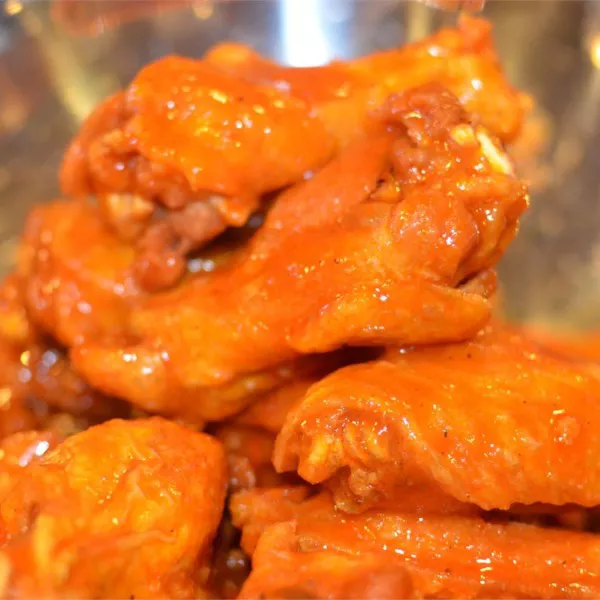

Simple, inexpensive, and easy to prepare, chicken wings are the perfect game-day nosh! And these chicken wing recipes by Chef John are the best of the best. This MVP list features classic Buffalo-style wings, along with creative takes like PBJ wings, jerk wings, pastrami wings, even wings in a jar and Buffalo nuggets! These wings are fan favorites for Super Bowl entertaining, as party appetizers, or for any-time snacking.
01.Chicken Wing Sauce
Let's kick this off with a classic! Here's the original Buffalo-style chicken wing sauce. It's a quick, simple sauce that's booming with flavor. And all it takes are a few minutes on the stove. "If you know someone from Buffalo, they know someone who told them the secret ingredients to the Anchor Bar's famous Buffalo chicken wings," says Chef John. "I know people from Buffalo. This is my version, as described to me many years ago, over almost as many beers."